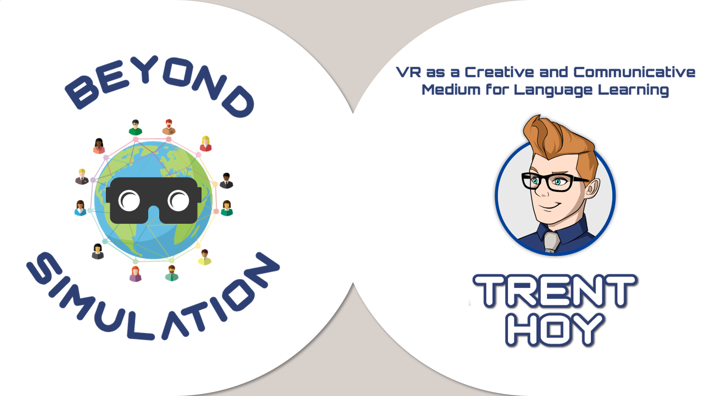
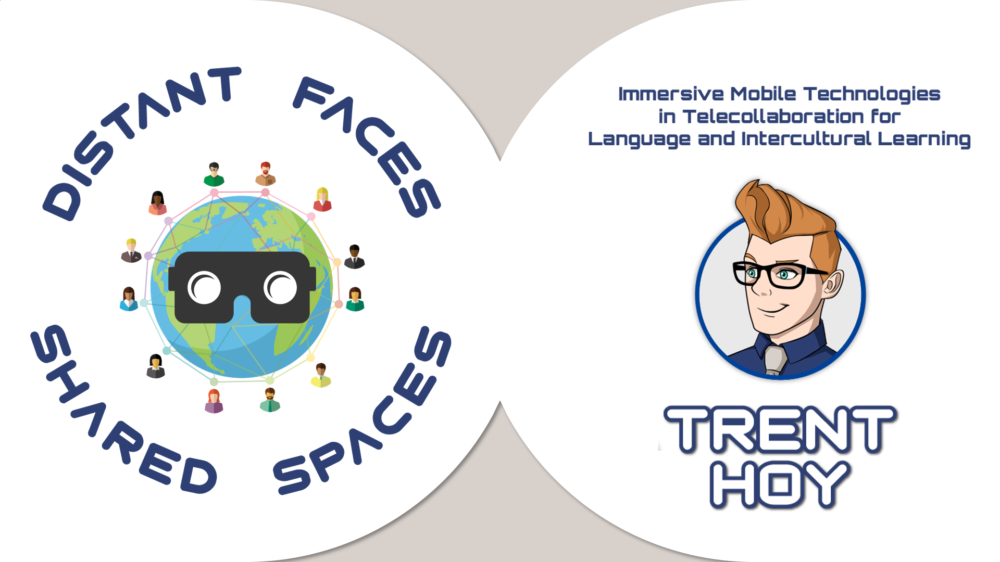

Need
How might accessible mobile VR add cultural context and a stronger sense of shared place to language-learning exchanges?

At a glance
How might accessible mobile VR add cultural context and a stronger sense of shared place to language-learning exchanges?
I designed and studied a telecollaboration experience, moving from literature review and experience design through implementation and data analysis.
The project produced a completed thesis study, instructor activity templates, technology tutorials, and presentations for academic and practitioner audiences.
It established the approach I still use with emerging technology: begin with the educational possibility, then test what the medium meaningfully adds.
Methods & tools: Mobile VR · Telecollaboration · Qualitative research · Faculty resources
Scroll or swipe to explore more →

